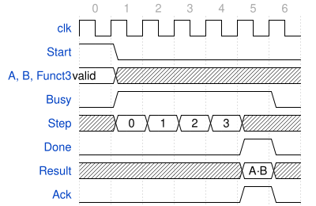
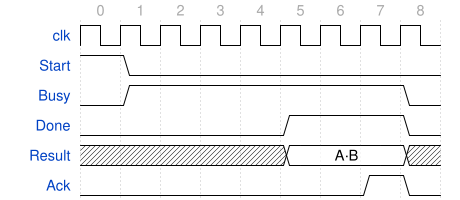
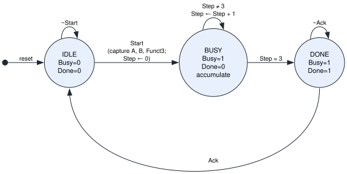
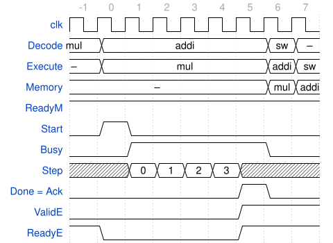

7 Homework 1: Extending the HIPV core
HIPV implements the RV32I base ISA. In this homework you add two standard RISC-V extensions to the core:
- Task 1 adds a subset of the bit-manipulation extensions Zba and Zbb. These are single-cycle instructions, and the work is in the decoder and the ALU.
- Task 2 adds Zmmul, the multiply half of the M extension. It is built from a single 16×16 multiplier, so a multiply takes several cycles and has to stall the pipeline.
Do the tasks in order. Task 2 relies on the decoder changes you make in Task 1.
To explore the instruction encodings of both tasks bit by bit, and to see what the current decoder does with each of them, use the interactive HIPV Encoding Explorer.
This is a graded homework (30 points), not a lab exercise. The code lives in the HIPV-SoC repository, branch hw1-student.
7.1 Before you start
1. Update Anvil. The FPGA flow needs a current Anvil. Run once on your own computer:
anvil update(On the classroom computers you cannot run anvil update; use the classroom patch from the Tools introduction instead.)
2. Get the hw1-student branch. The homework is done on the hw1-student branch of the HIPV-SoC repository. It contains everything listed under “What is provided”.
git clone <HIPV-SoC repository URL> # skip if you already have a clone
cd HIPV-SoC
git fetch origin
git checkout hw1-student # or: git switch hw1-student
git status # should say: On branch hw1-student3. Tools.
| Tool | Version | Notes |
|---|---|---|
| Verilator | ≥ 5.036 | |
| cocotb | 2.x | pip install -r requirements.txt |
| RISC-V GCC | recent | Tested with riscv64-unknown-elf-gcc 15.2. Needs .option arch support in the assembler. |
4. Reading.
- Lecture notes posted on Ucilnica (E-classroom)
- The RISC-V Unprivileged ISA specification (releases): the chapter on the B extension (Zba, Zbb) and the chapter on the M extension (Zmmul).
5. Sanity check. Before you change anything, check the setup:
python3 scripts/check_setup.py # Verilator, cocotb, pytest, RISC-V GCCThis catches most setup problems in seconds — including a cocotb that’s too old (the testbenches need the 2.x API) and a RISC-V GCC whose assembler doesn’t accept .option arch, +zbb (needed for Task 1). Then run the existing testbenches (see Testbenches); they must pass:
cd tb/core && make
cd tb/unit/idu && make
cd tb/unit/ieu && make7.2 What is provided
| File | What it is |
|---|---|
tb/common/rv32i.py |
Python encoders for all homework instructions (andn, min, mul, …) and li for 32-bit constants |
tb/common/hw1_model.py |
Python reference model of every homework instruction |
rtl/core/ieu/mul.sv |
Task 2 skeleton with the fixed interface of the multiplier |
rtl/core/ieu/mulctrl.sv |
Task 2 skeleton for the multiplier’s control unit |
tb/unit/mul/ |
Testbench for the mul module |
tb/core/test_zbb.py, tb/core/test_zmmul.py |
Testbenches for the whole pipeline, Task 1 and Task 2 |
sw/hw1/check/ |
Self-checking C program for both tasks, run on the SoC |
sw/hw1/bench/ |
Benchmark comparing the new instructions with RV32I code |
sw/hw1/hw1_insn.h |
Inline-assembly wrappers for the new instructions |
7.2.1 Where to change the code
Every place you have to change is marked in the source with a comment starting with HW1 Task 1 or HW1 Task 2. The comments say where to work, not what to write. List them with:
grep -rn "HW1 Task" config rtl| File | Task | What happens there |
|---|---|---|
config/hipv_pkg.sv |
1 | ALU operation codes |
rtl/core/idu/idudec.sv |
1, 2 | decoder inputs, a multiply control output, the main decoder (multiply, divide), the ALU decoder (Zba/Zbb) |
rtl/core/idu/idu.sv |
1, 2 | the bits passed to the decoder, the new outputs of the Decode stage |
rtl/core/ieu/alu.sv |
1 | the Zba/Zbb operations |
rtl/core/ieu/ieu.sv |
1, 2 | the new inputs, the D/E control register, the handshake (ReadyE/ValidE), the multiplier instance and its result |
rtl/core/hipv_core.sv |
1, 2 | the wires between idu and ieu |
rtl/core/ieu/mul.sv |
2 | the multiplier datapath (new) |
rtl/core/ieu/mulctrl.sv |
2 | the multiplier state machine (new) |
mul.sv and mulctrl.sv are already listed in every testbench Makefile and in the FPGA flow. If you add another RTL file, add it to the VERILOG_SOURCES of tb/unit/ieu, tb/unit/mul, tb/core, tb/soc and tb/fpga, and to scripts/anvil_flow.py.
7.3 Testbenches
HIPV is verified with cocotb and Verilator: the design is simulated by Verilator, and the test itself is a Python program that drives the design’s inputs and checks its outputs. Each directory under tb/ is one testbench:
- a
Makefile, which says which RTL files to compile and which module is the top (TOPLEVEL); - one or more
test_*.pyfiles, each holding several tests (Python functions marked@cocotb.test()).
Run a testbench with make in its directory. Useful options:
| Option | Effect |
|---|---|
TESTCASE=<name> |
run only one test |
WAVES=1 |
write a waveform, dump.vcd |
The homework uses testbenches at three levels. The level tells you what is simulated and what plays the rest of the world.
| Level | Directory | Simulated RTL | The testbench plays |
|---|---|---|---|
| Unit | tb/unit/<module> |
one module (mul, idu, ieu, …) |
the modules around it: it drives every input port directly, cycle by cycle |
| Core | tb/core |
the CPU pipeline hipv_core only: fetch, decode, execute, memory, writeback, forwarding. No RAM, bus or peripherals. |
the two memories: Python models of an instruction and a data memory on the core’s OBI bus ports, with configurable wait states |
| SoC | tb/soc (via make run in sw/) |
the complete system hipv_soc: core, crossbar, RAM, UART, timer, GPIO |
the outside world: it loads a compiled C program into the RAM and decodes the characters the program prints on the UART pin |
A failure at a lower level is easier to debug: the unit testbench points straight at one module, while a failed SoC test only tells you the printed text was wrong. Work upwards: unit first, then core, then SoC.
7.3.1 Unit level: tb/unit/mul (Task 2)
Toplevel: your mul module alone. The testbench plays the Execute stage. It pulses Start with the operands, waits for Done, then raises Ack. Every result is compared with hw1_model.py.
To check the interface contract in the header of mul.sv, the testbench does two things on every operation:
- it drives random values on
A,BandFunct3after theStartcycle, so a unit that does not capture its operands fails; - it checks that
Busy,DoneandResultfollow the contract.
| Test | What it checks |
|---|---|
test_edge_cases |
all four instructions on 12×12 operands chosen to break naive designs: 0, 1, all ones, 0x80000000, 0x7FFFFFFF, values on the 16-bit seam such as 0x0000FFFF and 0x00010000 |
test_random |
400 random operations; Ack is delayed by 0–3 cycles, and Done/Result must hold steady meanwhile |
test_latency |
logs the Start → Done latency of each instruction (record it for the report); fails if it exceeds 8 cycles |
test_back_to_back |
a new Start in the cycle right after Ack |
cd tb/unit/mul && make7.3.2 Unit level: tb/unit/idu and tb/unit/ieu (regression and Task 1)
These test the Decode and Execute stages. You will change both modules. The original tests must keep passing: they check that the RV32I behavior is unchanged. They write the existing ALUControl codes as numbers, so keep those codes unchanged (see Task 1).
tb/unit/idu: field extraction, decoding of every RV32I instruction class, register file read/write and bypass, flush, back-pressure.tb/unit/ieu: all ten ALU operations, branch conditions and targets,jal/jalr,lui/auipc, forwarding selection, back-pressure, bubbles.
Both testbenches also contain tests for the homework:
tb/unit/idu:test_zba_zbb_decodeandtest_zba_zbb_same_funct3_distinctcheck that every new instruction decodes to something different from the RV32I instruction with the samefunct3(and from each other).test_zmmul_decodechecks thatmul,mulh,mulhsuandmulhuare flagged for the multiplier, and thatdiv,divu,remandremudo not write a register. These tests do not depend on how you encode the control signals.tb/unit/ieu:test_alu_encodingchecks the ALU codes inhipv_pkg.svagainst the table in Task 1.test_zba,test_zbb_logic_with_negate,test_zbb_min_maxandtest_zbb_countdrive the new codes into the Execute stage and compare theALUResultEwith a reference model. The tests read the codes fromhipv_pkg.sv, so the constants must have the names given in the table.
7.3.3 Core level: tb/core
Toplevel: hipv_core, the pipeline without the SoC around it. Each test:
- builds a short program in Python with the encoders in
rv32i.py(li(1, 0x80000000),andn(3, 1, 2),sw(3, 0, 10), …); - places it in the Python instruction memory and runs the core for a fixed number of cycles;
- checks the values the program stored in the Python data memory against
hw1_model.py.
A failure prints the instruction, its operands, the stored value and the expected value, for example andn(0x00000001, 0x00000000) = 0x00000000, expected 0x00000001. “Never written” means the store never happened; usually the pipeline hung, or the store went to the wrong address.
The Makefile selects the test file with MODULE:
| Command | File | Contents |
|---|---|---|
make |
test_hipv_core.py |
the existing RV32I tests (regression): forwarding, load-use, branches, calls, byte/half accesses, slow memories, forwarding while Execute stalls |
make MODULE=test_zbb |
test_zbb.py |
Task 1 |
make MODULE=test_zmmul |
test_zmmul.py |
Task 2 |
test_zbb.py (Task 1)
| Test | What it checks |
|---|---|
test_zba |
sh1add, sh2add, sh3add on 12×4 edge-case pairs plus random pairs |
test_logic_with_negate |
andn, orn, xnor on the same pairs |
test_min_max |
min, minu, max, maxu; the pairs include operands where signed and unsigned order differ |
test_forwarding_chain |
six new instructions in a row, each using the previous result (forwarding into and out of the new operations) |
test_rv32i_still_works |
the RV32I instructions that share encodings with the new ones: add, sub, xor, sll/srl/sra, slli/srli/srai, andi, ori |
test_zmmul.py (Task 2)
| Test | What it checks |
|---|---|
test_mul_edge |
all four instructions on edge-case operand pairs |
test_mul_random |
all four instructions on random pairs |
test_mul_dependencies |
a multiply using the result of the previous multiply, an ALU instruction using multiply results, a multiply using an ALU result, a store of a multiply result |
test_mul_after_load_slow_memory |
multiplies whose operands come from loads that are still waiting for a slow data memory while instruction fetch is fast. This is the case behind “When may the multiplier start?” (Task 2). |
test_mul_and_branches |
a branch on a multiply result, and a multiply on a branch path that is skipped (it must not write its register) |
test_back_to_back |
six independent multiplies in a row |
test_div_rem_are_nops |
div, divu, rem, remu must leave their destination register unchanged |
7.3.4 SoC level: sw/hw1/check and sw/hw1/bench
Toplevel: hipv_soc, the complete system. make run in a program directory compiles the C program, loads the binary into the SoC’s RAM, simulates the whole system and captures everything the program prints on the UART (tb/soc/test_sw.py).
sw/hw1/checkis self-checking. Every instruction runs on all pairs of 12 operands and is compared with a reference written in plain RV32I C, so the reference does not depend on your hardware. The run passes if the printed text matchesexpected.txtexactly. A failing line shows how many results were wrong and the first one:sh1add OK min FAIL 23/144 a=80000000 b=00000001 hw=00000001 ref=80000000sw/hw1/benchprints a table and does not check anything (see Software on the SoC).
A run simulates 4 million cycles and takes about half a minute.
Testing on real hardware. sw/hw1/check is the binary to flash to the board — sw/hw1/bench is simulation/report-only. Build and program it with:
make APP=hw1/check all # build, synthesise, flashThe Makefile builds for the Nexys A7 100T by default (BOARD ?= nexys-100t). If you have the Nexys A7 50T, select it with the BOARD variable:
make BOARD=nexys-50t APP=hw1/check all # same build, for the Nexys A7 50TTo test your design on the board instead of simulating it with make run, give the target explicitly. For example, on the Nexys A7 50T:
make APP=hw1/check BOARD=nexys-50t fpga # build the firmware and the bitstream
make APP=hw1/check BOARD=nexys-50t program # flash the existing buildfpga only builds; program flashes the board without rebuilding; all runs sw, fpga and program in one go.
The only valid values are nexys-100t and nexys-50t. Any other value stops make with an “Unknown BOARD” error. You can also set the board once for your shell session with export BOARD=nexys-50t, which saves repeating it on every command.
After flashing, open a serial terminal at 19200 8N1 (see docs/FPGA.md). The program runs once at boot and stops — it does not loop. If you don’t see output (the terminal was opened after it already ran, or you want to see it again), press the CPU_RESETN button (the red one) to restart it; you do not need to reflash.
7.3.5 Existing SoC and FPGA testbenches (regression)
tb/soc (with plain make: a small assembly program exercising every peripheral) and tb/fpga (the board wrapper) must still pass at the end. They don’t test the new instructions; they show you haven’t broken the system.
7.4 Task 1: Zba/Zbb subset
7.4.1 Instructions
All instructions write rd. rs1 and rs2 are the register operands. R-type instructions use opcode OP (0110011), the others use OP-IMM (0010011).
| Instruction | Ext. | Opcode | funct7 | rs2 field | funct3 | Operation |
|---|---|---|---|---|---|---|
sh1add |
Zba | OP | 0010000 |
rs2 | 010 |
(rs1 << 1) + rs2 |
sh2add |
Zba | OP | 0010000 |
rs2 | 100 |
(rs1 << 2) + rs2 |
sh3add |
Zba | OP | 0010000 |
rs2 | 110 |
(rs1 << 3) + rs2 |
andn |
Zbb | OP | 0100000 |
rs2 | 111 |
rs1 & ~rs2 |
orn |
Zbb | OP | 0100000 |
rs2 | 110 |
rs1 \| ~rs2 |
xnor |
Zbb | OP | 0100000 |
rs2 | 100 |
~(rs1 ^ rs2) |
min |
Zbb | OP | 0000101 |
rs2 | 100 |
signed minimum |
minu |
Zbb | OP | 0000101 |
rs2 | 101 |
unsigned minimum |
max |
Zbb | OP | 0000101 |
rs2 | 110 |
signed maximum |
maxu |
Zbb | OP | 0000101 |
rs2 | 111 |
unsigned maximum |
7.4.2 What to change
- The decoder. Today
idudec.svonly receivesfunct7[5]. Every encoding it doesn’t recognize silently runs as an RV32I instruction. Assemble anandnand work out which RV32I instruction the current core executes instead. Pass the bits you need intoidudec.- Most new instructions share their funct3 with an RV32I instruction (
andnwithand,xnorwithxor,minuwithsrl/sra, …). The RV32I instructions must keep working. funct7[5]alone is not enough:minuandsrlshare both funct3 andfunct7[5](both 0) — you need more offunct7to tell them apart.
- Most new instructions share their funct3 with an RV32I instruction (
- The ALU control signal.
ALUControlis 4 bits wide and 10 of the 16 codes are used. Widen it to 5 bits and add the new codes tohipv_pkg.svwith the encoding below.- Keep the existing codes unchanged. The unit tests in
tb/unit/iduandtb/unit/ieuuse them. - The width appears in
hipv_pkg,idudec,idu,ieu(including the D/E pipeline registerctrlreg),aluandhipv_core.
- Keep the existing codes unchanged. The unit tests in
- The ALU. Add the new operations. Before you add a new block for every instruction, look for hardware you already have:
sh2addis an add with one operand shifted.andnis anandwith one operand inverted.min/maxneed exactly the comparison thatslt/sltualready compute.
- Lint. The testbenches run Verilator with
-Wall, and every warning is an error. Don’t switch warnings off globally.
7.4.3 ALU control encoding
The ALU, the decoder and the testbenches share one encoding, so hipv_pkg.sv must define exactly these constants with exactly these values, as 5-bit localparam logic [4:0]. tb/unit/ieu (test_alu_encoding) fails if a name is missing, a value differs, a constant is not 5 bits wide, or two operations share a code.
| Constant | Code | Constant | Code |
|---|---|---|---|
ALU_ADD |
00000 |
ALU_SH2ADD |
01011 |
ALU_SUB |
00001 |
ALU_SH3ADD |
01100 |
ALU_SLL |
00010 |
ALU_ANDN |
01101 |
ALU_SLT |
00011 |
ALU_ORN |
01110 |
ALU_SLTU |
00100 |
ALU_XNOR |
01111 |
ALU_XOR |
00101 |
ALU_MIN |
10000 |
ALU_SRL |
00110 |
ALU_MINU |
10001 |
ALU_SRA |
00111 |
ALU_MAX |
10010 |
ALU_OR |
01000 |
ALU_MAXU |
10011 |
ALU_AND |
01001 |
ALU_CLZ |
10100 |
ALU_SH1ADD |
01010 |
ALU_CPOP |
10101 |
For the bonus instructions (run the tests with HW1_BONUS=1) the codes continue: ALU_CTZ 10110, ALU_SEXTB 10111, ALU_SEXTH 11000, ALU_ZEXTH 11001, ALU_ROL 11010, ALU_ROR 11011, ALU_ORCB 11100, ALU_REV8 11101.
7.4.4 Testing Task 1
cd tb/core && make MODULE=test_zbb # core level, Task 1
cd tb/core && make # core level, RV32I regression
cd tb/unit/idu && make # unit level: decoder, regression and Task 1
cd tb/unit/ieu && make # unit level: ALU codes and results, regression and Task 1The SoC-level check sw/hw1/check also covers Task 1, but it only passes completely once Task 2 is done as well.
7.5 Task 2: Zmmul with a single 16×16 multiplier
7.5.1 Instructions
| Instruction | funct7 | funct3 | Result |
|---|---|---|---|
mul |
0000001 |
000 |
low 32 bits of rs1 × rs2 |
mulh |
0000001 |
001 |
high 32 bits, both operands signed |
mulhsu |
0000001 |
010 |
high 32 bits, rs1 signed and rs2 unsigned |
mulhu |
0000001 |
011 |
high 32 bits, both operands unsigned |
All four use opcode OP. The divide instructions div, divu, rem and remu (funct7 0000001, funct3 1xx) are not part of Zmmul. HIPV has no illegal-instruction trap yet, so they must execute as nops: no register is written.
7.5.2 Required architecture
Constraints. The whole design may contain exactly one multiplication operator, with two 16-bit unsigned operands. A multiply must finish (Done) at most 8 cycles after Start.
* operator
Implement the 16×16 multiplier with the SystemVerilog * operator, for example P = A16 * B16; with 16-bit unsigned operands. Do not write your own multiplier out of shifts and adds. The synthesis tool maps * onto the FPGA’s dedicated multiplier hardware, and this single * is the one multiplication operator the design may contain.
Idea. Split each operand into 16-bit halves, A = AH·2¹⁶ + AL (and the same for B). Then
A·B = A_L·B_L + (A_L·B_H + A_H·B_L)·2¹⁶ + A_H·B_H·2³²so four 16×16 products, each shifted to its weight, give the full 64-bit product. The unit computes one of them per cycle and sums them in a 64-bit accumulator.
Algorithm. The unit executes Table 7.2 once per multiply. A, B and Funct3 are valid only in the Start cycle, so everything the later steps need must be stored there.
· use the same multiplier.
| Cycle | Step | Operations |
|---|---|---|
Start |
AReg ← A, BReg ← BHighWord ← (Funct3 ≠ 000)Acc ← AccInit(A, B, Funct3) |
|
| 1 | 0 | Acc ← Acc + A_L · B_L |
| 2 | 1 | Acc ← Acc + (A_L · B_H) << 16 |
| 3 | 2 | Acc ← Acc + (A_H · B_L) << 16 |
| 4 | 3 | Acc ← Acc + (A_H · B_H) << 32 |
Done |
Result ← HighWord ? Acc[63:32] : Acc[31:0] |
In every step, Step selects the operand halves and the shift:
- the half of A is
Step[1] ? AReg[31:16] : AReg[15:0]; - the half of B is
Step[0] ? BReg[31:16] : BReg[15:0]; - the shift is 16 · (
Step[1]+Step[0]) bits.
mul returns the low word of the sum, mulh, mulhsu and mulhu the high word.
Signed operands. The four partial products are unsigned, so the sum above is the product of the unsigned bit patterns. A signed 32-bit value equals its unsigned bit pattern minus 2³² when bit 31 is set:
Asigned = Aunsigned − a31·2³²
Work out from this what correction mulh and mulhsu need, and what AccInit must be for each of the four instructions. Explain in your report why the correction only affects the high word, and why mul needs none. One clean way to apply it costs no extra cycle: look at the Acc ← AccInit operation in the Start cycle.
Structure.
mul.svholds the datapath. Its ports are fixed and must not change, because the unit testbench depends on them. The header ofmul.svdefines the contract forStart,Ack,BusyandDone; read it carefully.mulctrl.svholds the state machine. Its ports are up to you.
7.5.3 Timing of the mul interface
The diagrams below show the reference design, which needs 5 cycles from Start to Done: one Start cycle, four partial-product cycles (Step 0–3) and one cycle presenting the result. Your design may be faster or slower, up to 8 cycles. One column is one clock cycle. x means “don’t care”: the value can be anything, and the testbench drives random values there.
Result taken at once (Ack in the first Done cycle). Cycle 0 is the Start cycle:

Ack in the first Done cycle. Dashed lines mark don’t-care values.
- Cycle 0:
Startis high. This is the only cycle in whichA,BandFunct3are valid, so everything the unit needs from them is captured at the end of this cycle. - Cycles 1–4: one partial product per cycle, selected by
Step. - Cycle 5:
Doneis high andResultholds the product.Ackin the same cycle means “taken”. - Cycle 6: the unit is idle again, and a new
Startmay come.
Result taken later (the pipeline is not ready yet). Done and Result hold until Ack:

Done and Result hold until Ack.
7.5.4 A suggested control unit (mulctrl)
The contract above already implies three states. The control unit below is one straightforward way to implement it. Other designs are fine as long as they keep the contract.

mulctrl.
| State | Meaning | Busy |
Done |
Accumulate |
|---|---|---|---|---|
IDLE |
no operation; waiting for Start |
0 | 0 | no |
BUSY |
one partial product per cycle, Step = 0, 1, 2, 3 |
1 | 0 | yes |
DONE |
result ready, waiting for Ack |
1 | 1 | no |
Transitions:
IDLE → BUSYonStart. In that same cycle the datapath captures the operands, remembers whether the low or the high word is wanted, and loads the accumulator with its starting value. The step counter is cleared.BUSY → BUSYwhileStep≠ 3. Each cycle adds one shifted partial product to the accumulator and incrementsStep.BUSY → DONEwhenStep= 3. The last partial product is added, so the accumulator holds the full 64-bit result from the next cycle on.DONE → IDLEonAck. WithoutAckthe unit stays inDONEand keeps the result.
Step drives the datapath directly. Its two bits select the operand halves, and the number of high halves sets the shift:
Step |
A half (Step[1]) |
B half (Step[0]) |
Partial product | Shift left |
|---|---|---|---|---|
| 0 | AL | BL | AL·BL | 0 |
| 1 | AL | BH | AL·BH | 16 |
| 2 | AH | BL | AH·BL | 16 |
| 3 | AH | BH | AH·BH | 32 |
So mulctrl needs only Start and Ack as inputs, and gives the datapath Busy, Done, an accumulate enable and Step.
7.5.5 Connecting it to the pipeline
The multiplier lives in the Execute stage (ieu.sv). Three questions guide the integration:
How does Execute hold an instruction? At the moment, Execute is ready whenever it is empty or the Memory stage accepts (
ReadyE = ~ValidEReg | ReadyM). A multiply has to stay in Execute until its result is ready, and must not be offered to Memory (ValidE) before that. ChangeReadyEandValidEso that the handshake does this. The rest of the pipeline then stalls on its own.This is what the reference design looks like when the Memory stage is free (
ReadyM= 1). The multiply enters Execute in cycle 0 and leaves it in cycle 5. Theaddibehind it waits in Decode, and the Memory stage sees bubbles meanwhile:
Figure 7.4: Reference design with ReadyM= 1: the multiply holds Execute for six cycles whileaddiwaits in Decode.Where does the result go? Forwarding takes the newest value from the Memory stage (
ForwardDataM) and from Writeback. If the product leaves Execute on the same path as an ALU result, forwarding works unchanged. Explain why in the report.When may the multiplier start? This is the subtle one. Your multiplier uses the forwarded operands in its
Startcycle, while an ALU instruction uses them in the cycle it leaves Execute. Read the comment onPCSrcEinieu.svand the section “Branches and jumps” inIEU.md. Then think about whatForwardDataMcontains while a load in the Memory stage is still waiting for its data.
Conditions for Start and Ack. Both signals are generated in ieu.sv, and each is the AND of several conditions:
| Signal | Condition | Why |
|---|---|---|
Start |
a valid instruction is in Execute (ValidEReg) |
a bubble must not start the multiplier |
that instruction is a multiply (MulE) |
ALU instructions never use the unit | |
the multiplier is not busy (~Busy) |
Start is a one-cycle pulse that is only legal while Busy = 0; without this term the unit would restart on every cycle that the multiply stays in Execute |
|
| the operands are final | the multiplier captures A and B in this one cycle, so a wrong forwarded value cannot be fixed later. Question 3 above asks which signal tells you this. |
|
Ack |
a valid multiply is in Execute and the unit reports Done |
there is a result to hand over |
the Memory stage accepts it (ReadyM) |
Ack is the handshake between the multiplier and the Memory stage. The result leaves Execute in the same cycle, so it is consumed only if Memory takes it. |
Two consequences:
DoneandResultstay stable untilAck. If Memory stalls, the multiply waits inDONEwith its result, and the multiplier is released only in the cycle the result moves on (the second waveform above).- The
Ackcondition is the same condition under whichValidEis offered to Memory andReadyErises. Use it in both places, so the multiplier and the pipeline never disagree about whether the instruction has left.
7.5.6 Testing Task 2
cd tb/unit/mul && make # unit level: the mul module alone
cd tb/core && make MODULE=test_zmmul # core level: the multiplier in the pipeline
cd sw/hw1/check && make run # SoC level: both tasks from CAt the end, run every testbench once more: tb/core with all three MODULE values, tb/unit/idu, tb/unit/ieu, tb/unit/mul, tb/soc and tb/fpga.
7.6 Software on the SoC
7.6.1 The self-check: sw/hw1/check
The program is compiled with -march=rv32i, so the compiler never emits a new instruction on its own. The only new instructions in the binary come from the wrappers in hw1_insn.h, for example:
static inline uint32_t hw_andn(uint32_t a, uint32_t b)
{
uint32_t r;
__asm__ volatile (".option push\n.option arch, +zbb\n"
"andn %0, %1, %2\n.option pop" : "=r"(r) : "r"(a), "r"(b));
return r;
}.option arch, +zbb enables the extension for the assembler inside this one block only. make dump shows the disassembly.
cd sw/hw1/check
make run # compared with expected.txt
make run REF=1 # reference against itself: checks the program on the unmodified core7.6.2 The benchmark: sw/hw1/bench
make run in sw/hw1/bench prints timer ticks per operation for each new instruction, next to the code an RV32I compiler produces without it (a libgcc call such as __mulsi3, or a few base instructions). Both columns include the same loop overhead, shown in the loop only row. It is not graded; it shows what your hardware buys. make run REF=1 prints the software version in both columns.
7.7 Report
Submit a PDF of at most 2 pages, explaining your design choices and the results of your tests.
7.8 Grading
The homework is worth 30 points.
| Part | Points |
|---|---|
| Task 1: provided and hidden tests | 10 |
| Task 2: provided and hidden tests | 12 |
| Your own tests (new cases, not copies) | 2 |
| Report | 4 |
| Code quality | 2 |
| Total | 30 |
7.9 Submission
- Submit a single ZIP file with your modified RTL and newly created testbench files and the report PDF. Do not include the provided tests, the SoC, the FPGA flow or the software. The ZIP file must not contain any other files or directories.
- The ZIP file must be named
hw1_team_<team_name>.zip, for examplehw1_team_H.zip.